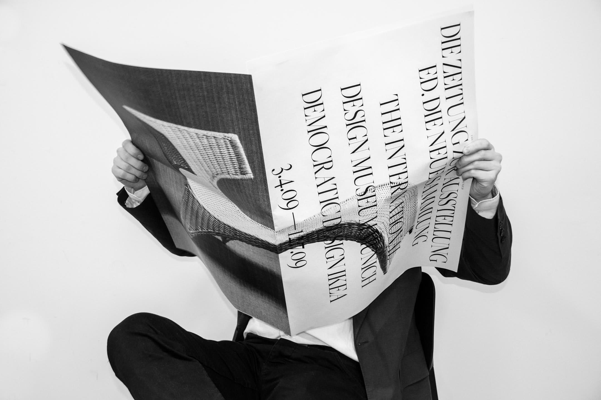
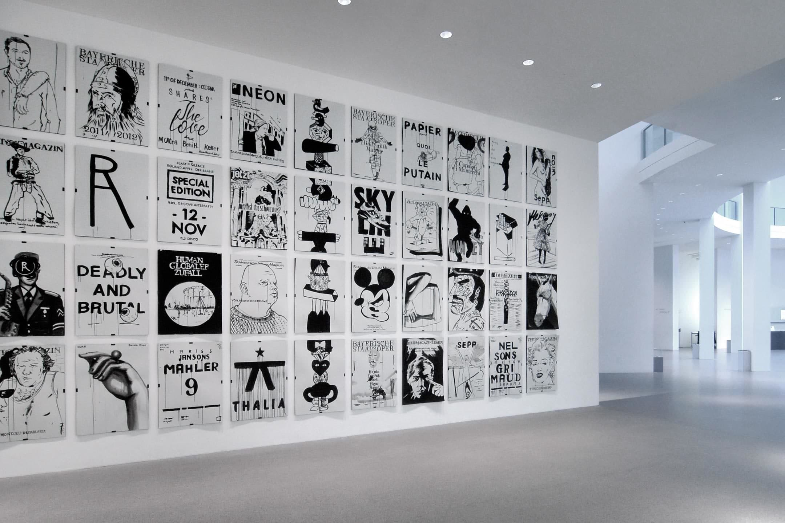
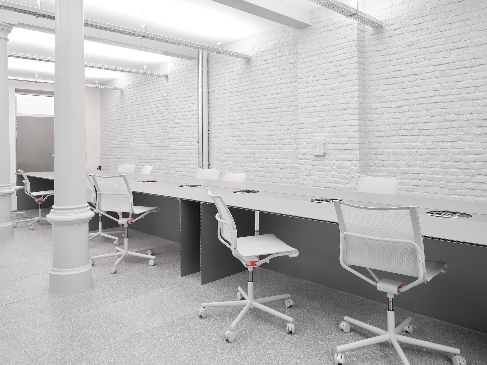
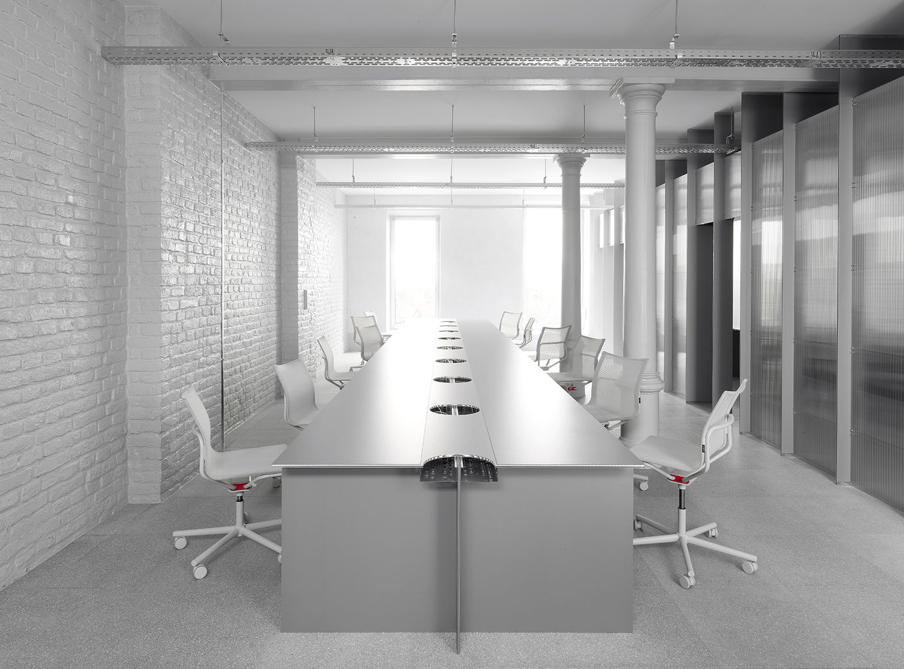

Mirko Borsche is a renowned german creative art director born in 1971, who loves to create original works within the scope of art, subculture, and design. Mirko Borsche’s career has spanned between work in corporate advertising and progressive cultural design. One time art director for the Mini Group in BMW, he also launched the hugely successful youth magazine NEON in Germany in the ’00s and has tenure as creative director at Die Zeit, a German national weekly newspaper.
In 2007 he founded his design studio Bureau Borsche in Munich, Germany. Renowned for its creative versatility, they offer design and communication consultancy for clients from all fields of interest and delve deep into the creative process to produce original works within the scope of art, subculture, and design. They’ve worked with clients that include Nike, Bavarian State Opera, Audi, BMW Group, Harper’s Bazaar, Supreme, Apple, Balenciaga, Rimowa and Inter Milano, just to name a few.
|  |  | 